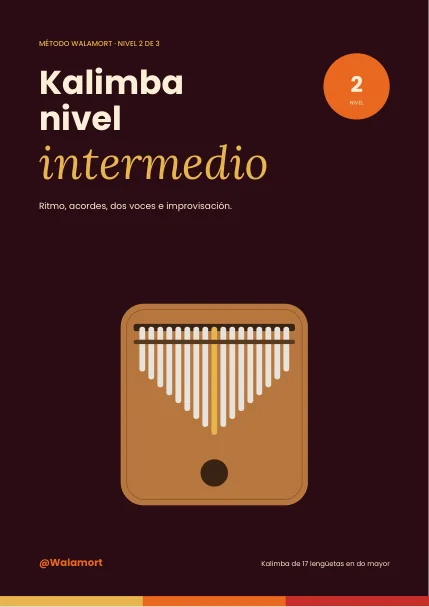
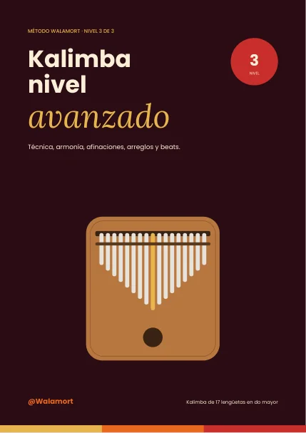
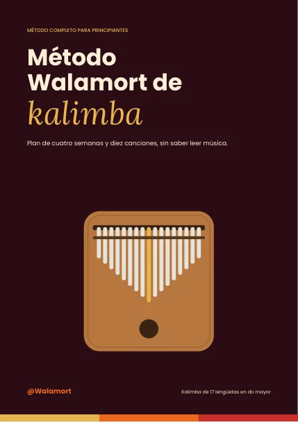
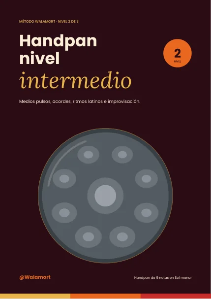
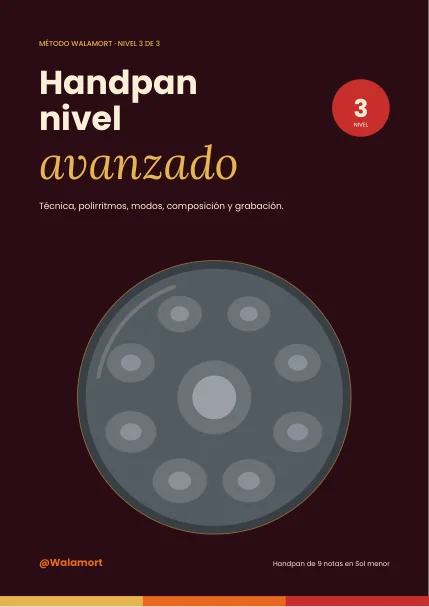
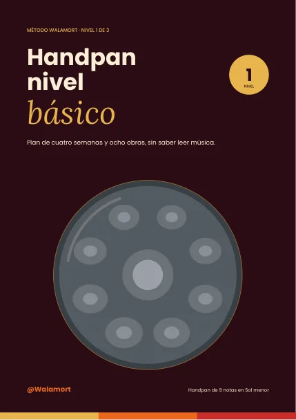
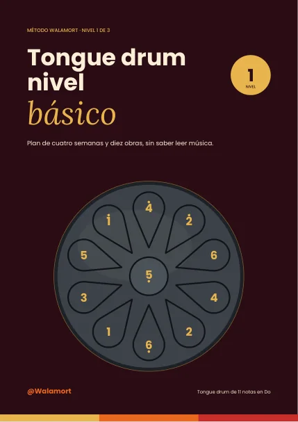
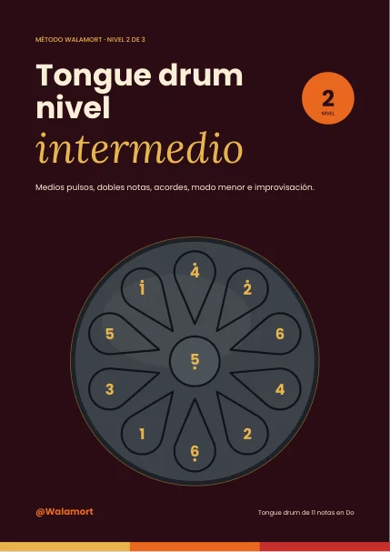
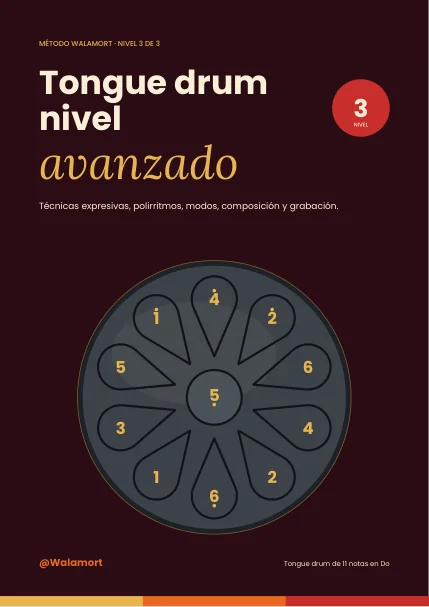
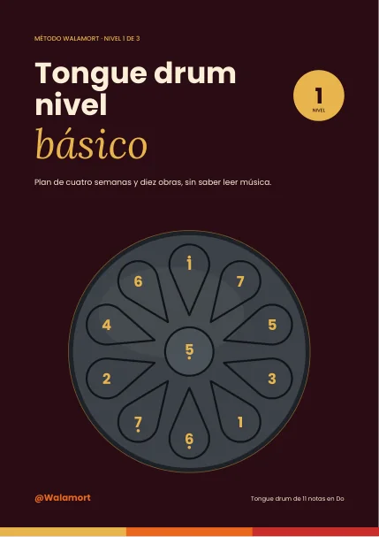

ES · EN · PT-BR
ES · EN · PT-BRKalimba · Básico
Cuatro semanas, diez canciones, ritmo, acordes y primeros efectos.
19 páginas · 17 láminas en Do mayor.
PDF incluidos: Español · English · Português (Brasil)
WALAMORT · MÉTODOS Y CUADERNOS
Empieza con una muestra, encuentra una ruta y elige si quieres avanzar por tu cuenta o con acompañamiento.


Una compra del producto incluye los tres idiomas en archivos separados. Revisa precio final, moneda y condiciones en Hotmart. El nombre del producto allí puede aparecer en español.
Los cuadernos creativos piloto y sus muestras siguen en español. Sus ediciones completas todavía no están a la venta.
ELIGE UN PRIMER PASO
ES · EN · PT-BRCuatro semanas, diez canciones, ritmo, acordes y primeros efectos.
19 páginas · 17 láminas en Do mayor.
PDF incluidos: Español · English · Português (Brasil)

ES · EN · PT-BRSiete acordes, dos voces, acompañamiento e improvisación pentatónica.
17 páginas · 17 láminas en Do mayor.
PDF incluidos: Español · English · Português (Brasil)

ES · EN · PT-BRLectura de partitura, afinaciones, armonización, arreglos y creación de beats.
17 páginas · 17 láminas en Do mayor.
PDF incluidos: Español · English · Português (Brasil)

ES · EN · PT-BRLos tres niveles: veinte canciones y obras, de tus primeras notas a crear arreglos.
53 páginas · 17 láminas en Do mayor.
PDF incluidos: Español · English · Português (Brasil)
 ES · EN · PT-BR
ES · EN · PT-BRPostura, técnica, grooves y ocho obras originales para empezar paso a paso.
19 páginas · 9 notas en Sol menor.
PDF incluidos: Español · English · Português (Brasil)

ES · EN · PT-BRNotas fantasma, gu, acordes, progresiones, cumbia, salsa y seis obras.
18 páginas · 9 notas en Sol menor.
PDF incluidos: Español · English · Português (Brasil)

ES · EN · PT-BRPolirritmos, compases irregulares, modos, composición y grabación con cuatro obras.
18 páginas · 9 notas en Sol menor.
PDF incluidos: Español · English · Português (Brasil)

ES · EN · PT-BRLos tres niveles y dieciocho obras originales: técnica, creación y grabación.
55 páginas · 9 notas en Sol menor.
PDF incluidos: Español · English · Português (Brasil)

ES · EN · PT-BRCuatro semanas y diez canciones y obras: baquetas, dedos, dos manos e improvisación.
19 páginas · 11 notas en Do, sin Si.
PDF incluidos: Español · English · Português (Brasil)

ES · EN · PT-BRNotas dobles, acordes, bajo y melodía juntos, modo menor e improvisación.
16 páginas · 11 notas en Do, sin Si.
PDF incluidos: Español · English · Português (Brasil)

ES · EN · PT-BRTrémolo, apagado, grooves, polirritmos, composición y grabación.
16 páginas · 11 notas en Do, sin Si.
PDF incluidos: Español · English · Português (Brasil)

ES · EN · PT-BRLos tres niveles y veintiuna canciones y obras para el modelo diatónico completo con Si.
51 páginas · 11 notas en Do, con Si.
PDF incluidos: Español · English · Português (Brasil)
Nuevo · Muestra gratuitaConstruye tríadas, relaciona grados, explora inversiones y acompaña una melodía.
Muestra de 5 páginas en español. El cuaderno piloto completo tiene 20 páginas: ejercicios, proyecto, plan de cuatro semanas y revisión.
Edición piloto en revisión editorial. La edición completa todavía no está a la venta; sin precio ni fecha anunciados.
Nuevo · Muestra gratuitaDesarrolla una idea breve, organiza frases y crea una miniatura de ocho o doce compases.
Muestra de 5 páginas en español. El cuaderno piloto completo tiene 20 páginas: ejercicios, proyecto, plan de cuatro semanas y revisión.
Edición piloto en revisión editorial. La edición completa todavía no está a la venta; sin precio ni fecha anunciados.
 Nuevo · Muestra gratuita
Nuevo · Muestra gratuitaPractica silencio, respuesta, pentatónica, notas objetivo y variación con restricciones claras.
Muestra de 5 páginas en español. El cuaderno piloto completo tiene 20 páginas: ejercicios, proyecto, plan de cuatro semanas y revisión.
Edición piloto en revisión editorial. La edición completa todavía no está a la venta; sin precio ni fecha anunciados.
 Nuevo · Muestra gratuita
Nuevo · Muestra gratuitaMezcla, EQ, compresión, delay, reverb y comparación A/B con experimentos conectados al laboratorio.
Muestra de cinco páginas en español. Piloto completo de 20 páginas con diez experimentos, plan y hoja de observación.
Edición completa en revisión editorial, todavía no a la venta.
Prepara una consulta de clase, taller o experiencia para tu institución. Puedes revisar el mensaje antes de enviarlo. Las clases y talleres actuales se realizan en español.
Diseñar mi consultaLos nueve métodos individuales y los tres packs de instrumento incluyen español, inglés y portugués de Brasil en Hotmart. Los cuadernos creativos siguen como pilotos: sus muestras están disponibles, pero las ediciones completas aún están en revisión.
Para los métodos de instrumento, revisa la afinación y características de tu modelo. Para explorar teoría y creación puedes empezar con las herramientas virtuales gratuitas.
El pago se realiza fuera de Walamort, en Hotmart. Revisa el producto, moneda, precio final y condiciones de entrega y devolución allí antes de pagar. Esta página no procesa tarjetas.
Guías completas de diez páginas para handpan y tongue drum. Son gratuitas; no necesitas comprar para descargarlas.
10 páginas · Español
Descargar guía PDF →10 páginas · Español
Descargar guía PDF →También puedes explorar la guía introductoria disponible.
Descargar guía · Español →Los métodos sueltos usan un modelo de 11 notas en Do sin Si; el pack usa Do mayor completo con Si. Son mapas distintos. Comprueba las notas reales de tu instrumento antes de elegir.